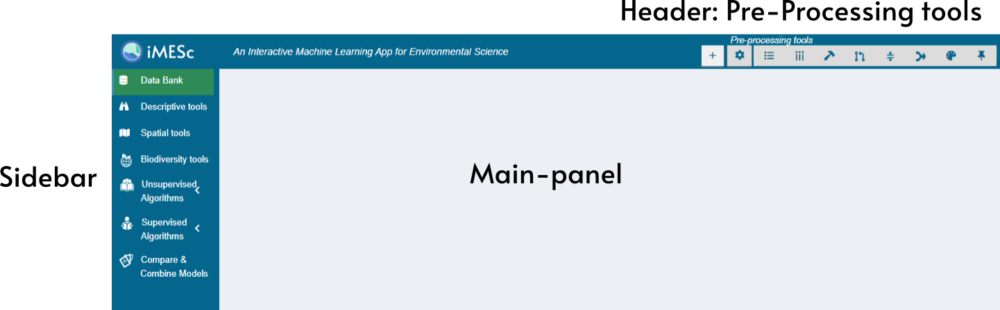
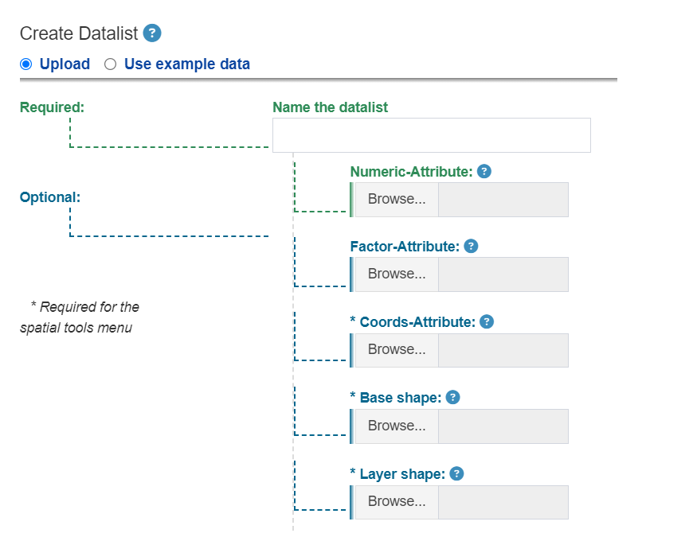
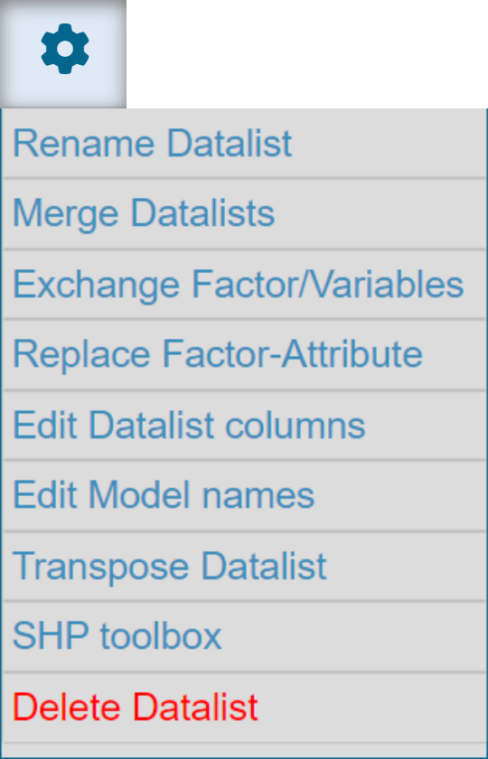
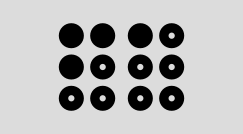
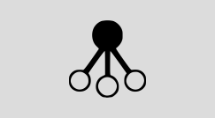

iMESc
iMESc
1 Introduction
iMESc is a
shiny-based application which implements a range of Machine Learning
(ML) algorithms for analyzing environmental data. Features include data
pre-processing, classical statistics, supervised and unsupervised ML
algorithms, interactive data visualization and saving the results in a
single file. Throughout the app, data input and output are organized in
modules enabling the creation of multiple ML pipelines.
The app is entirely written in the R programming language and relies on several other R packages (see section X for the full list of packages).
2 Setup
install.packages('shiny')Run the code below;
shiny::runGitHub('iMESc','DaniloCVieira', ref='main')The app will automatically install the required packages, and may take some time if this is your first time using the application. The next time, it shouldn’t take more than a few seconds.
3 Layout
iMESc
is built using a dashboard layout: a header composed by the
Pre-Processing Tools (1), a Sidebar
(2) composed by menus , and a Main-Panel (3)
for visualizing outputs. To ensure that iMESc content
fits nicely on the screen, we recommend a landscape minimum resolution
of 1377 x 768 pixels. Get started by Creating a Datalist using the  button from
the Pre-Processing tools.
button from
the Pre-Processing tools.

4 Pre-processing Tools
4.1  Create a
Datalist
Create a
Datalist
iMESc implements its analytic tasks on Datalists. A Datalist is composed by two mandatory spreadsheets, called Numeric-Attribute and Factor-Attribute. All analyses available at iMESc will require a Datalist created by the user, either uploaded or using example data.
- Numeric Attribute: creation of a Datalist requires at least one csv file to be uploaded as Numeric-Attribute, where rows are the observations, columns are the variables The first column must contain the observation labels.Columns containing characters are automatically transferred to the Factor-Attribute.
- Factor-Attribute is also a csv file, and must contain the factors for your data, which will be used for labeling, grouping and viewing the results. It can contain as many factors as you want. If no file for the Factor-Attribute is uploaded, the Factor-Attribute will only consist of the IDs from the Numeric-Attribute.

The Datalist may also include 3 additional files for spatializing the results: Coords-Attribute, Base-Shape-Attribute and Layer-Shape-Attribute. The first one is mandatory for generating maps: a csv file containing the IDs, Longitude and Latitude of the observations.
The Base-Shape-Attribute and Layer-Shape-Attribute are optional. Each
is composed by a single R file containing the shape to be used
to clip interpolated surfaces (e. g., an oceanic basin shape) and the
shape to be used to be used as an additional layer (e.g., a continent
shape), respectively. These files can be created later using the
SHP toolbox available from  button, which
allow the user convert shapefiles (.shp, .shx and .dbf files) into a
single R file.
button, which
allow the user convert shapefiles (.shp, .shx and .dbf files) into a
single R file.
4.2 Use example Data
This option allows the user to insert the example data available in iMESc. When creating a Datalist, choose “use example data” from the radio-button and proceed with Datalist insertion. This single action inserts two Datalists from Araçá Bay (southeastern coast of Brazil):
envi_araca: 141 samples with 9 environmental variables
nema_araca: 194 free-living marine nematode species (southeastern coast of Brazil).
Both Datalists carry Coords-Attribute, Base-Shape and Layer Shape.
4.3  Options
Options
This drop-down menu offers to the user a range of tools for editing
Datalists. Among them, we highlight the Exchange
Factor/Variables function for converting/transferring Factors
to Numeric (binary or ordinal) and vice-verse.
The SHP toolbox for creating Base-Shapes, Layer-Shapes and Extra-Shapes is also an
useful tool from the  button.
button.

4.4
This group of buttons appears when using the functionalities provided
by 

 . Changes applied to the target Datalist (selected from the
Datalist-picker), can be previewed in the Track
changes drop-down panel. If any changes are made, the button will flash blue, indicating
that it is necessary to save the changes. The button undoes all changes made.
. Changes applied to the target Datalist (selected from the
Datalist-picker), can be previewed in the Track
changes drop-down panel. If any changes are made, the button will flash blue, indicating
that it is necessary to save the changes. The button undoes all changes made.
4.5 Track changes
This group of panels shows up when using the functionalities provided
by 

 . The user can track changes in real-time via summary
panels and histograms. We highlight the Missing values panel
for checking the number of missing values per variable.
. The user can track changes in real-time via summary
panels and histograms. We highlight the Missing values panel
for checking the number of missing values per variable.
Changes: displays current and previous changes (see existing)
Summary: displays the number of missing values, rows and columns; and minimum, average, median, and maximum values.
Data: Histogram of all numerical values
colSums: Column sum histogram
rowSums: row sum historam
Missing values: number of missing values per variable.
4.6  Filter observations
Filter observations
Na.omit: Remove all observations that contain any empty cases (NAs)
Match with: Restrict current Datalist to observations (IDs) from another Datalist
Filter by Factors: Link to display a Filter Tree structure based on the levels of the Factor-Attribute. Click in the nodes to expand and select the factor levels. Only available for factors with less than 100 levels.
Individual selection Link to select observations using Datalist IDs.
4.7 Filter variables
Value based removal
Abund<: Remove variables with an value less than x-percent of the total;
Freq<: Remove variables occurring in less than x-percent of the number of samples;
Singletons: Requires a counting data. Remove variables occurring only once;
Individual Selection: Link to select variables using columns names.
4.8  Transformations
Transformations
4.8.1 Transformation
None: No Transformation
Log2: logarithmic base 2 transformation as suggested by Anderson et al. (2006): log_b (x) + 1 for x > 0, where b is the base of the logarithm. Zeros are left as zeros. Higher bases give less weight to quantities and more to presences, and logbase = Inf gives the presence/absence scaling. Please note this is not log(x+1). Anderson et al. (2006) suggested this for their (strongly) modified Gower distance, but the standardization can be used independently of distance indices.
Log10: logarithmic base 10 transformation as suggested by Anderson et al. (2006): log_b (x) + 1 for x > 0, where b is the base of the logarithm. Zeros are left as zeros. Higher bases give less weight to quantities and more to presences, and logbase = Inf gives the presence/absence scaling. Please note this is not log(x+1). Anderson et al. (2006) suggested this for their (strongly) modified Gower distance, but the standardization can be used independently of distance indices.
Total: divide by the line (observation) total
Max: divide by column (variable) maximum
Frequency: divide by column (variable) total and multiply by the number of non-zero items, so that the average of non-zero entries is one
Range: standardize column (variable) values into range 0 … 1. If all values are constant, they will be transformed to 0
Pa: scale x to presence/absence scale (0/1)
Chi.square: divide by row sums and square root of column sums, and adjust for square root of matrix total
Hellinger: square root of method = total
Sqrt2: square root
Sqrt4: 4th root
Log2(x+1): logarithmic base 2 transformation (x+1)
Log10(x+1): logarithmic base 10 transformation (x+1)
BoxCox: Designed for non-negative responses. boxcox transforms nonnormally distributed data to a set of data that has approximately normal distribution. The Box-Cox transformation is a family of power transformations.
Yeojohson: Similar to the Box-Cox model but can accommodate predictors with zero and/or negative values
expoTrans: Exponential transformation
4.8.2 Scale and Centering
Scale: If scale is TRUE then scaling is done by dividing the (centered) columns of x by their standard deviations if center is TRUE, and the root mean square otherwise. If scale is FALSE, no scaling is done.
Center: If center is TRUE then centering is done by subtracting the column means (omitting NAs) of x from their corresponding columns, and if center is FALSE, no centering is done.
4.8.3 Random Rarefraction
Generates one randomly rarefied community given sample size. If the sample size is equal to or larger than the observed number of individuals, the non-rarefied community will be returned
4.9 Data imputation
Median/mode: Numeric-Attribute columns are imputed with the median; Factor-Attribute columns are imputed with the mode
Knn: k-nearest neighbor imputation is only available for the Numeric-Attribute. It is carried out by finding the k closest samples (Euclidian distance) in the dataset. This method automatically center and scale your data.
Baginpute: Only available for the Numeric-Attribute. Imputation via bagging fits a bagged tree model for each predictor (as a function of all the others). This method is simple, accurate and accepts missing values, but it has much higher computational cost.
MedianImpute: Only available for the Numeric-Attribute. Imputation via medians takes the median of each predictor in the training set, and uses them to fill missing values. This method is simple, fast, and accepts missing values, but treats each predictor independently, and may be inaccurate.
4.10  Data split
Data split
Add partition as a factor in the Factor-Attribute. For the supervised ML methods, you can choose this partition to constrain training and testing data.
Random Sampling: simple random sampling is used
Balanced Sampling: The random sampling is done within the levels of a choosen factor in an attempt to balance the class distributions within the splits.
4.11 Aggregate
The process involves two stages. First, collate individual cases of the Numeric-Attribute together with a grouping variable (unselected factors). Second, perform which calculation you want on each group of cases (selected factors). Available methods includes Mean, Sum, Median, Var (variance), SD (standard deviation), Min, Max.
4.12  Create Palette
Create Palette
Create customized palettes to be used along the graphical outputs.
4.13  Savepoint
Savepoint
Create: create a savepoint, a single R object to be downloaded and that can be reloaded later to restore analysis output.
Restore : Upload a savepoint (.rds file) to restore the dashboard.
5 Sidebar-menu
5.1  Data Bank
Data Bank
Datalist-Picker: Drop-down selector of the target Datalist
Numeric-Attribute: shows the Numeric-Attribute sheet
 Factor-Attribute: shows the Factor-Attribute sheet
Factor-Attribute: shows the Factor-Attribute sheet
 Coords-Attribute: shows the Coords-Attribute sheet
Coords-Attribute: shows the Coords-Attribute sheet
 Shapes:
Shapes:
Base-Shape: the shape to be used to clip interpolated surfaces (e. g., an oceanic basin shape) ;
Layer-Shape:the shape to be used to be used as an additional layer (e.g., a continent shape);
Extra-Shapes:Any additional shapes to be included in the Datalist (e.g. bathymetry lines).

SOM-Attribute: displays the summary of SOM models (unsupervised and supervised) (if saved in the target Datalist).NB-Attribute: displays the summary of NB models

KNN-Attribute: displays the summary of KNN models SVM-Attribute: displays the summary of SVM models
SVM-Attribute: displays the summary of SVM models
 RF-Attribute:
displays the summary of RF models
RF-Attribute:
displays the summary of RF models
 SGBOOST
-Attribute: displays the summary of SGBOOST models
SGBOOST
-Attribute: displays the summary of SGBOOST models
5.2 Descriptive tools
Datalist-Picker: Drop-down menu to select the target Datalist
5.2.1 Summary
Data: shows number of rows, columns and missing values of the Numeric-Attribute;
Variable: shows summary and a histogram for each variable in the Numeric-Attribute;
Factors: shows a summary of the Factor-Attribute and box-plot with the count of the Factors levels;
Datalist:: shows the Datalist structure.
5.2.2 Ridges:
- Ridge plots are partially overlapping line plots that create the impression of a mountain range. They can be quite useful for visualizing changes in distributions over time or space. This function uses the geom_ridgeline function from the ggridges package.
5.2.3 Scatter
- A graph in which the values of two variables are plotted along two axes, the pattern of the resulting points revealing any correlation present.;
5.2.4 Histogram
- Numeric-Attribute column sum histogram
5.2.5 Boxplot:
- Boxplot with numerous graphical options
5.2.6 MDS
- Nonmetric Multidimensional Scaling. This functionality uses the metaMDS function from vegan package. It uses default arguments, with user option to choose the distance metric (Bray-Curtis, Euclidean and Jacquard). The user can interact with several graphical options, including coloring observations by a factor from the associated Factor-Attribute.
5.2.7 PCA
- Principal Component Analysis. This functionality uses the prcomp function from R base. We recommend scaling the data before the PCA analysis (Scale and Centering). The user can interact with several graphical options, including coloring observations by a factor from the associated Factor-Attribute.
5.2.8 RDA
Redundancy Analysis. This functionality uses the rda function from from vegan package. It requires at least two Datalist for building a Y~X model. The results are presented in two panels:
Plot with with several graphical options, such as coloring observations by a factor from the associated Factor-Attribute.
Summary: results of the rda model- importance (constrained and unconstrained), variable and observation scores, linear constrains and biplot.
5.2.9 segRDA
This functionality implements the segRDA workflow for modelling non-continuous linear responses of ecological data. The routine consists of three panels:
SMW - Split Moving Windows along ordered data
DP: dissimilarity profile of the SMW results for identifying breakpoints
pwRDA: performs a piece-wise redundancy analysis using specified breakpoints. The results are presented in the same way as in the RDA panel.
5.3  Spatial Tools
Spatial Tools
Header:
Y Datalist: drop-down selector of the target Datalist
Attribute: Numeric or Factor-Atribute
Variable: the Variable/Factor to plot
Filter: constrain observations to a factor level
Level: if ‘Filter’ is not “none”, the level to constrain the observations.
Discrete
Plain
3d
Stacked 3d
Interpolation
Plain
Surface
Stacked 3d
Raster
Plain
Surface
Stacked 3d
5.4  Biodiversity Tools
Biodiversity Tools
Diversity Indexes
Niche
5.5  Unsupervised Algorithms
Unsupervised Algorithms
5.6  Self-Organizing maps
Self-Organizing maps
5.7  Hierarchical clustering
Hierarchical clustering
5.8  K-means
K-means
5.9  Supervised Algorithms
Supervised Algorithms
5.10  Naive Bayes
Naive Bayes
5.11  Support Machine Vector
Support Machine Vector
5.12 K-Nearest neighbor
5.13  Random Forest
Random Forest
5.14  Stochastic Gradient
Boosting
Stochastic Gradient
Boosting
5.15 Self-Organizing Maps
5.16 Compare and Combine Models
Compare
Combine